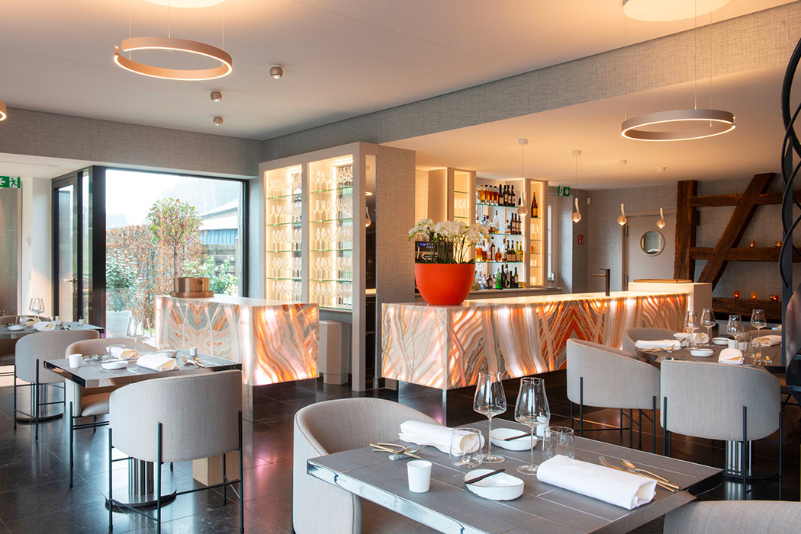
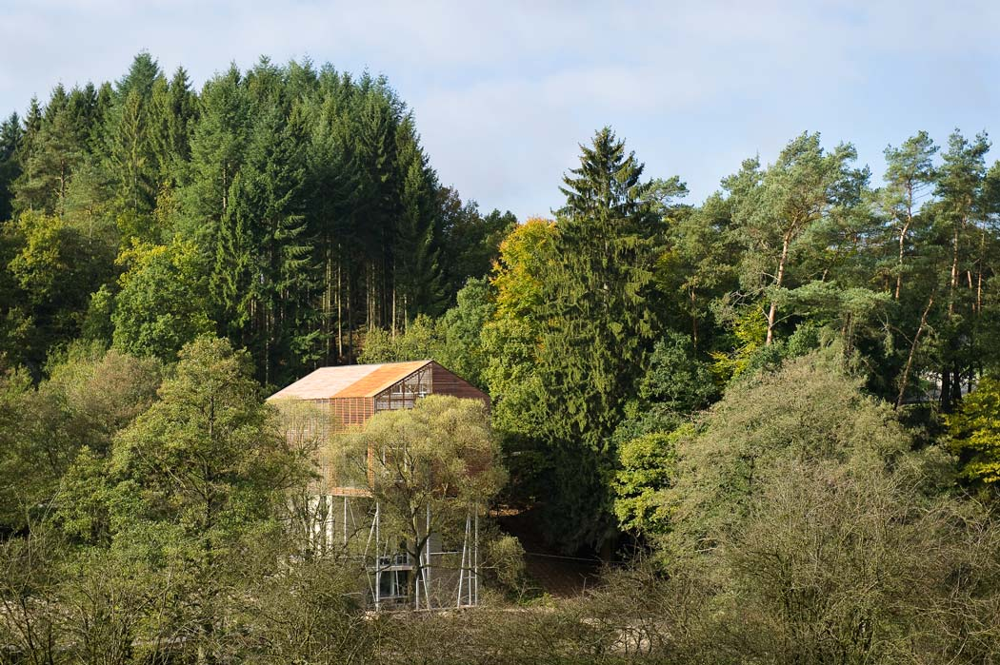
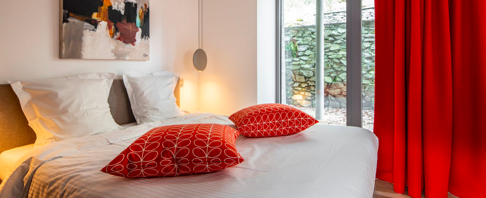
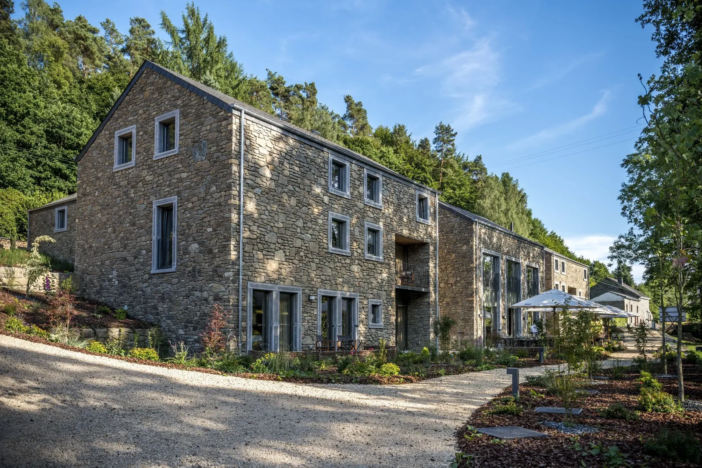
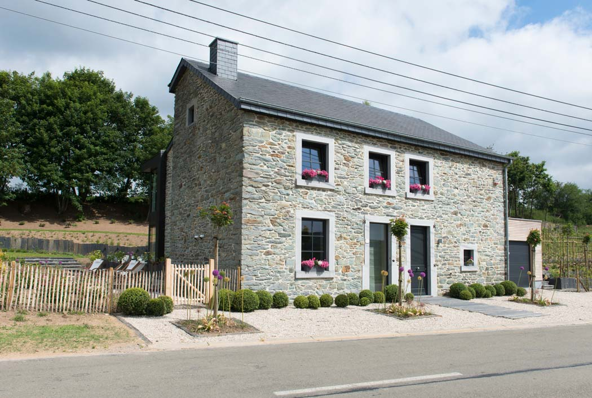
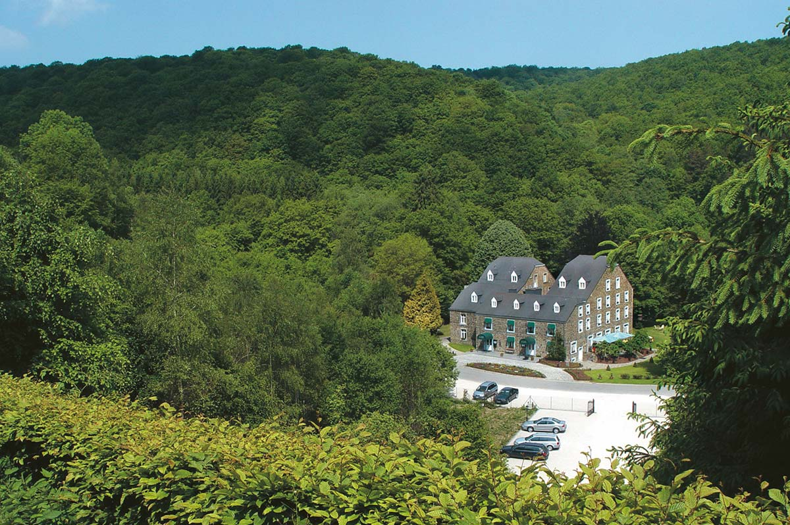
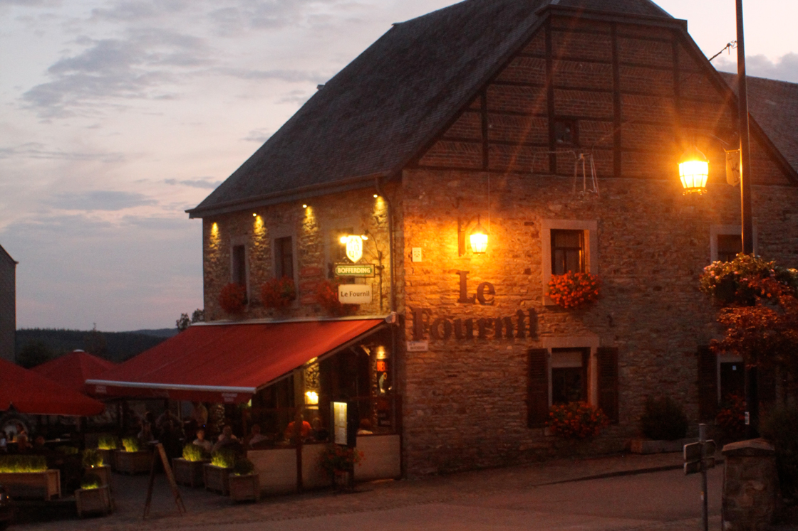
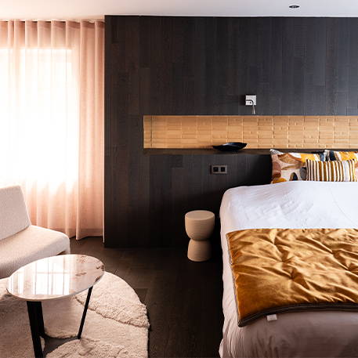

<style>
  :root {
    --paper: #f6f1e8;
    --paper-2: #ede4d2;
    --stone: #d9ccb4;
    --ink: #25201a;
    --ink-2: #4a3f33;
    --muted: #8a7c66;
    --rule: #c4b394;
    --rust: #b35c3a;
    --moss: #5a6b4a;
    --michelin: #b8112e;
    --gold: #a8843a;
    --serif: "Cormorant Garamond", "Playfair Display", Georgia, serif;
    --sans: "Inter", -apple-system, BlinkMacSystemFont, sans-serif;
    --mono: "JetBrains Mono", "SF Mono", Consolas, monospace;
  }

  @import url('https://fonts.googleapis.com/css2?family=Cormorant+Garamond:ital,wght@0,400;0,500;0,600;0,700;1,400;1,500&family=Inter:wght@300;400;500;600;700&family=JetBrains+Mono:wght@400;500&display=swap');

  .catalog {
    background: var(--paper);
    color: var(--ink);
    font-family: var(--sans);
    line-height: 1.5;
    margin: 0;
    padding: 0;
    overflow-x: hidden;
  }

  /* --- masthead --- */
  .masthead {
    padding: 3.5rem 4rem 2rem;
    border-bottom: 1px solid var(--rule);
    background: var(--paper);
  }
  .masthead-row {
    display: flex;
    justify-content: space-between;
    align-items: baseline;
    font-family: var(--mono);
    font-size: 0.72rem;
    letter-spacing: 0.16em;
    text-transform: uppercase;
    color: var(--muted);
    margin-bottom: 2.5rem;
  }
  .masthead-row span { white-space: nowrap; }
  .wordmark {
    font-family: var(--serif);
    font-weight: 500;
    font-size: clamp(3rem, 6.5vw, 5.5rem);
    line-height: 0.95;
    letter-spacing: -0.015em;
    color: var(--ink);
    margin: 0 0 1rem;
    max-width: 24ch;
  }
  .wordmark em {
    font-style: italic;
    color: var(--rust);
    font-weight: 400;
  }
  .deck {
    font-family: var(--serif);
    font-style: italic;
    font-size: clamp(1.1rem, 1.5vw, 1.35rem);
    color: var(--ink-2);
    max-width: 60ch;
    margin: 0 0 1.5rem;
    line-height: 1.45;
  }
  .meta-strip {
    display: flex;
    flex-wrap: wrap;
    gap: 1.5rem 2.5rem;
    font-family: var(--mono);
    font-size: 0.7rem;
    letter-spacing: 0.1em;
    text-transform: uppercase;
    color: var(--muted);
    padding-top: 1.5rem;
    border-top: 1px solid var(--stone);
  }
  .meta-strip strong {
    color: var(--ink);
    font-weight: 500;
    margin-left: 0.4rem;
  }

  /* --- verdict --- */
  .verdict {
    padding: 4rem 4rem 3rem;
    background: var(--paper-2);
    border-bottom: 1px solid var(--rule);
    position: relative;
  }
  .verdict-tag {
    font-family: var(--mono);
    font-size: 0.7rem;
    letter-spacing: 0.22em;
    text-transform: uppercase;
    color: var(--michelin);
    margin-bottom: 1rem;
    display: inline-flex;
    align-items: center;
    gap: 0.5rem;
  }
  .verdict-tag::before {
    content: "★★";
    font-size: 0.9rem;
    color: var(--michelin);
    letter-spacing: 0;
  }
  .verdict-headline {
    font-family: var(--serif);
    font-weight: 500;
    font-size: clamp(1.8rem, 3.5vw, 3rem);
    line-height: 1.05;
    color: var(--ink);
    margin: 0 0 1.5rem;
    max-width: 28ch;
  }
  .verdict-headline em {
    font-style: italic;
    color: var(--rust);
  }
  .verdict-body {
    font-size: 1.05rem;
    line-height: 1.65;
    max-width: 68ch;
    color: var(--ink-2);
  }
  .verdict-body a { color: var(--ink); text-decoration: underline; text-decoration-color: var(--rust); text-decoration-thickness: 1.5px; text-underline-offset: 3px; }
  .verdict-body sup a { color: var(--muted); text-decoration: none; font-family: var(--mono); }

  /* --- tier headers --- */
  .tier {
    padding: 3.5rem 4rem;
    border-bottom: 1px solid var(--rule);
  }
  .tier-1 { background: var(--paper); }
  .tier-2 { background: var(--paper-2); }
  .tier-3 { background: var(--paper); }

  .tier-head {
    display: grid;
    grid-template-columns: auto 1fr auto;
    gap: 2rem;
    align-items: end;
    margin-bottom: 2.5rem;
    padding-bottom: 1.25rem;
    border-bottom: 1px solid var(--stone);
  }
  .tier-num {
    font-family: var(--serif);
    font-size: 4.5rem;
    line-height: 0.9;
    font-weight: 400;
    font-style: italic;
    color: var(--rust);
  }
  .tier-title {
    font-family: var(--serif);
    font-size: 1.9rem;
    font-weight: 500;
    color: var(--ink);
    line-height: 1.15;
    margin: 0;
  }
  .tier-sub {
    font-size: 0.95rem;
    color: var(--muted);
    margin: 0.25rem 0 0;
    max-width: 50ch;
  }
  .tier-stat {
    text-align: right;
    font-family: var(--mono);
    font-size: 0.7rem;
    letter-spacing: 0.15em;
    text-transform: uppercase;
    color: var(--muted);
  }
  .tier-stat b {
    display: block;
    font-family: var(--serif);
    font-size: 2.2rem;
    color: var(--ink);
    font-weight: 500;
    letter-spacing: -0.02em;
    line-height: 1;
    margin-bottom: 0.35rem;
  }

  /* --- card grids --- */
  .grid-2 {
    display: grid;
    grid-template-columns: repeat(2, 1fr);
    gap: 2rem;
  }
  .grid-3 {
    display: grid;
    grid-template-columns: repeat(3, 1fr);
    gap: 1.75rem;
  }
  .grid-wide {
    display: grid;
    grid-template-columns: 1fr;
    gap: 2rem;
  }
  @media (max-width: 900px) {
    .grid-2, .grid-3 { grid-template-columns: 1fr; }
    .masthead, .verdict, .tier { padding-left: 1.5rem; padding-right: 1.5rem; }
  }

  /* --- property card --- */
  .card {
    background: #fff;
    border: 1px solid var(--stone);
    overflow: hidden;
    display: flex;
    flex-direction: column;
    position: relative;
    transition: box-shadow 0.2s;
  }
  .card:hover { box-shadow: 0 8px 28px rgba(37,32,26,0.08); }
  .card-photo {
    position: relative;
    aspect-ratio: 4 / 3;
    overflow: hidden;
    background: var(--stone);
  }
  .card-photo img {
    width: 100%;
    height: 100%;
    object-fit: cover;
    display: block;
  }
  .card-photo.placeholder {
    display: flex;
    align-items: center;
    justify-content: center;
    color: var(--paper);
    font-family: var(--serif);
    font-style: italic;
    font-size: 1.4rem;
    text-align: center;
    padding: 1.5rem;
    line-height: 1.2;
  }

  /* chips overlaid on photo */
  .chip-row {
    position: absolute;
    top: 0.85rem;
    left: 0.85rem;
    right: 0.85rem;
    display: flex;
    justify-content: space-between;
    gap: 0.5rem;
    pointer-events: none;
  }
  .chip {
    display: inline-flex;
    align-items: center;
    gap: 0.35rem;
    background: rgba(246,241,232,0.96);
    color: var(--ink);
    padding: 0.35rem 0.7rem;
    font-family: var(--mono);
    font-size: 0.7rem;
    font-weight: 500;
    letter-spacing: 0.04em;
    border: 1px solid rgba(37,32,26,0.08);
    backdrop-filter: blur(4px);
  }
  .chip-dist { background: rgba(37,32,26,0.88); color: var(--paper); border-color: transparent; }
  .chip-price {
    background: var(--ink);
    color: var(--paper);
    font-family: var(--serif);
    font-size: 0.95rem;
    font-weight: 500;
    letter-spacing: 0;
    padding: 0.3rem 0.75rem;
  }
  .chip-price small {
    font-family: var(--sans);
    font-size: 0.65rem;
    letter-spacing: 0.1em;
    text-transform: uppercase;
    opacity: 0.7;
    margin-left: 0.3rem;
  }
  .chip-walk { background: var(--moss); color: #fff; border-color: transparent; }
  .chip-best { background: var(--michelin); color: #fff; border-color: transparent; }
  .chip-tag {
    position: absolute;
    bottom: 0.85rem;
    left: 0.85rem;
    background: rgba(255,255,255,0.96);
    color: var(--ink);
    padding: 0.3rem 0.65rem;
    font-family: var(--mono);
    font-size: 0.65rem;
    letter-spacing: 0.1em;
    text-transform: uppercase;
  }

  .card-body {
    padding: 1.4rem 1.5rem 1.5rem;
    flex: 1;
    display: flex;
    flex-direction: column;
  }
  .card-locale {
    font-family: var(--mono);
    font-size: 0.65rem;
    letter-spacing: 0.18em;
    text-transform: uppercase;
    color: var(--muted);
    margin-bottom: 0.45rem;
  }
  .card-name {
    font-family: var(--serif);
    font-size: 1.65rem;
    font-weight: 500;
    line-height: 1.1;
    margin: 0 0 0.85rem;
  }
  .card-name a { color: var(--ink); text-decoration: none; border-bottom: 1px solid transparent; transition: border-color 0.15s; }
  .card-name a:hover { border-bottom-color: var(--rust); }
  .card-desc {
    font-size: 0.95rem;
    line-height: 1.55;
    color: var(--ink-2);
    margin: 0 0 1.1rem;
    flex: 1;
  }
  .card-desc a, .card-desc sup a {
    color: var(--muted);
    text-decoration: none;
    font-family: var(--mono);
    font-size: 0.7em;
  }
  .card-specs {
    display: flex;
    flex-wrap: wrap;
    gap: 0.6rem 0.85rem;
    padding-top: 0.85rem;
    border-top: 1px solid var(--stone);
    font-family: var(--mono);
    font-size: 0.7rem;
    color: var(--ink-2);
  }
  .spec {
    display: inline-flex;
    align-items: center;
    gap: 0.3rem;
  }
  .spec-key {
    color: var(--muted);
    letter-spacing: 0.08em;
    text-transform: uppercase;
    font-size: 0.6rem;
  }

  /* hero card — first card in tier 1 is the headline */
  .hero-card {
    grid-column: 1 / -1;
    display: grid;
    grid-template-columns: 1.4fr 1fr;
    background: #fff;
    border: 1px solid var(--stone);
    overflow: hidden;
    min-height: 480px;
  }
  .hero-card .card-photo { aspect-ratio: unset; height: 100%; }
  .hero-card .card-body {
    padding: 2.5rem 2.75rem 2.5rem;
    justify-content: center;
  }
  .hero-card .card-locale { font-size: 0.7rem; }
  .hero-card .card-name { font-size: 2.6rem; margin-bottom: 1rem; }
  .hero-card .card-desc { font-size: 1.05rem; line-height: 1.6; }
  .hero-pullquote {
    font-family: var(--serif);
    font-style: italic;
    font-size: 1.3rem;
    line-height: 1.4;
    color: var(--rust);
    border-left: 3px solid var(--rust);
    padding: 0.5rem 0 0.5rem 1.1rem;
    margin: 1.1rem 0 1.4rem;
    max-width: 32ch;
  }
  .hero-michelin {
    display: inline-flex;
    align-items: center;
    gap: 0.5rem;
    font-family: var(--mono);
    font-size: 0.65rem;
    letter-spacing: 0.18em;
    text-transform: uppercase;
    color: var(--michelin);
    margin-bottom: 0.5rem;
  }
  .hero-michelin::before {
    content: "★★";
    font-size: 1rem;
    letter-spacing: 0;
  }
  @media (max-width: 900px) {
    .hero-card { grid-template-columns: 1fr; min-height: 0; }
    .hero-card .card-photo { aspect-ratio: 4 / 3; }
  }

  /* tier 2 wide card */
  .wide-card {
    display: grid;
    grid-template-columns: 1fr 1.1fr;
    background: #fff;
    border: 1px solid var(--stone);
    overflow: hidden;
    min-height: 360px;
  }
  .wide-card .card-photo { aspect-ratio: unset; height: 100%; }
  .wide-card .card-body { padding: 2rem 2.25rem; justify-content: center; }
  .wide-card .card-name { font-size: 2rem; }
  @media (max-width: 900px) {
    .wide-card { grid-template-columns: 1fr; min-height: 0; }
    .wide-card .card-photo { aspect-ratio: 4 / 3; }
  }

  /* compact tier 3 card */
  .card-compact .card-name { font-size: 1.35rem; }
  .card-compact .card-body { padding: 1.1rem 1.25rem 1.25rem; }
  .card-compact .card-desc { font-size: 0.88rem; }
  .card-compact .card-photo { aspect-ratio: 5 / 3; }

  /* --- practicals strip --- */
  .practicals {
    padding: 3.5rem 4rem;
    background: var(--ink);
    color: var(--paper);
    border-bottom: 1px solid var(--rule);
  }
  .practicals-head {
    font-family: var(--serif);
    font-size: 2.2rem;
    font-weight: 500;
    color: var(--paper);
    margin: 0 0 0.5rem;
  }
  .practicals-sub {
    font-family: var(--mono);
    font-size: 0.7rem;
    letter-spacing: 0.2em;
    text-transform: uppercase;
    color: var(--gold);
    margin-bottom: 2.5rem;
  }
  .practicals-grid {
    display: grid;
    grid-template-columns: repeat(4, 1fr);
    gap: 2rem 2.5rem;
  }
  @media (max-width: 900px) { .practicals-grid { grid-template-columns: repeat(2, 1fr); } .practicals { padding: 2rem 1.5rem; } }
  .practical {
    border-top: 1px solid rgba(168,132,58,0.4);
    padding-top: 1rem;
  }
  .practical-icon {
    font-family: var(--serif);
    font-size: 2rem;
    color: var(--gold);
    line-height: 1;
    margin-bottom: 0.6rem;
    display: block;
  }
  .practical-title {
    font-family: var(--serif);
    font-size: 1.25rem;
    font-weight: 500;
    color: var(--paper);
    margin: 0 0 0.5rem;
    line-height: 1.2;
  }
  .practical-body {
    font-size: 0.88rem;
    line-height: 1.55;
    color: rgba(246,241,232,0.78);
  }
  .practical-body a { color: var(--gold); text-decoration: none; border-bottom: 1px dotted var(--gold); }
  .practical-body sup a { color: rgba(168,132,58,0.7); font-family: var(--mono); font-size: 0.65em; border: none; }
  .phone {
    font-family: var(--mono);
    font-size: 1.05rem;
    color: var(--gold);
    letter-spacing: 0.05em;
    font-weight: 500;
  }

  /* --- sources ledger --- */
  .ledger {
    padding: 3.5rem 4rem;
    background: var(--paper-2);
  }
  .ledger-head {
    font-family: var(--mono);
    font-size: 0.7rem;
    letter-spacing: 0.22em;
    text-transform: uppercase;
    color: var(--muted);
    margin-bottom: 1.75rem;
    display: flex;
    align-items: baseline;
    gap: 1rem;
    border-bottom: 1px solid var(--stone);
    padding-bottom: 0.85rem;
  }
  .ledger-head b {
    font-family: var(--serif);
    font-size: 2rem;
    color: var(--ink);
    font-weight: 500;
    letter-spacing: -0.02em;
  }
  .ledger-grid {
    display: grid;
    grid-template-columns: repeat(2, 1fr);
    gap: 0.85rem 2.5rem;
  }
  @media (max-width: 900px) { .ledger-grid { grid-template-columns: 1fr; } .ledger { padding: 2rem 1.5rem; } }
  .src {
    display: grid;
    grid-template-columns: 36px 22px 1fr;
    gap: 0.6rem;
    align-items: baseline;
    font-size: 0.82rem;
    line-height: 1.4;
    padding: 0.35rem 0;
  }
  .src-n {
    font-family: var(--mono);
    font-size: 0.7rem;
    color: var(--rust);
    text-align: right;
    font-weight: 500;
  }
  .src img {
    width: 16px;
    height: 16px;
    display: block;
  }
  .src a {
    color: var(--ink);
    text-decoration: none;
    border-bottom: 1px solid var(--stone);
  }
  .src a:hover { border-bottom-color: var(--rust); }
  .src-claim {
    color: var(--muted);
    font-size: 0.75rem;
    display: block;
    margin-top: 0.15rem;
  }

  /* --- colophon --- */
  .colophon {
    padding: 2.5rem 4rem 3.5rem;
    background: var(--paper);
    display: grid;
    grid-template-columns: 1fr 1fr 1fr;
    gap: 2rem;
    align-items: end;
    font-family: var(--mono);
    font-size: 0.72rem;
    letter-spacing: 0.12em;
    text-transform: uppercase;
    color: var(--muted);
  }
  @media (max-width: 900px) { .colophon { grid-template-columns: 1fr; padding: 2rem 1.5rem; gap: 1.5rem; } }
  .colophon a { color: var(--ink); text-decoration: none; border-bottom: 1px solid var(--rust); }
  .colophon-mid { text-align: center; }
  .colophon-end { text-align: right; }
  .colophon .sibling {
    display: block;
    font-family: var(--serif);
    font-size: 1.1rem;
    font-style: italic;
    text-transform: none;
    letter-spacing: 0;
    color: var(--ink);
    margin-top: 0.25rem;
  }
</style>

<article class="catalog">

  <!-- ============ MASTHEAD ============ -->
  <header class="masthead">
    <div class="masthead-row">
      <span>The Lodgings Catalog · Vol. 1</span>
      <span>Issue 55 · 2026</span>
      <span>Our · Belgian Ardennes</span>
    </div>
    <h1 class="wordmark">Eleven rooms<br>near a <em>two-star</em> kitchen.</h1>
    <p class="deck">Six on-site Maxime Collard rooms versus cheaper fallbacks in Paliseul, Daverdisse and Redu — with prices, distances and what to book first.</p>
    <div class="meta-strip">
      <span>Survey depth<strong>Lodging guide</strong></span>
      <span>Properties<strong>11</strong></span>
      <span>Tiers<strong>3</strong></span>
      <span>Cited sources<strong>18</strong></span>
      <span>Reading<strong>4 min</strong></span>
    </div>
  </header>

  <!-- ============ VERDICT ============ -->
  <section class="verdict">
    <div class="verdict-tag">Editor's pick · The booking call</div>
    <h2 class="verdict-headline">Book one of the <em>six rooms</em> directly above La Table de Maxime — it's the only way to wobble three metres from tasting menu to bed.</h2>
    <p class="verdict-body">
      €240–260 a night, breakfast included <sup><a href="https://www.maximecollard.be/en/la-table-de-maxime/">[1]</a></sup>. If those are full — likely, only six exist — the next-best on-site picks are <a href="https://www.maximecollard.be/en/la-fabrique-du-pre-maho/">La Fabrique du Pré Maho</a> (tree-stilt eco-build, 200 m away <sup><a href="https://www.maximecollard.be/en/la-fabrique-du-pre-maho/">[2]</a></sup>) or budget <a href="https://www.lesterrassesdelour.be/">Les Terrasses de l'Our</a> in the same hamlet from €150 <sup><a href="https://www.lesterrassesdelour.be/">[5]</a></sup>. True fallback when Our is sold out: <a href="https://www.daverdisse.com/">Le Moulin de Daverdisse</a>, four-star with pool, eleven kilometres away <sup><a href="https://www.daverdisse.com/">[9]</a></sup>.
    </p>
  </section>

  <!-- ============ TIER 1 — IN HAMLET ============ -->
  <section class="tier tier-1">
    <header class="tier-head">
      <div class="tier-num">I</div>
      <div>
        <h3 class="tier-title">In the hamlet of Our</h3>
        <p class="tier-sub">Walk to dinner. Four properties, roughly twenty-four rooms in total. Book three to six months out — Friday and Saturday especially.</p>
      </div>
      <div class="tier-stat"><b>0–200 m</b>walk to restaurant</div>
    </header>

    <div class="grid-2">

      <!-- HERO: La Table de Maxime -->
      <div class="hero-card">
        <div class="card-photo">
          
          <div class="chip-row">
            <span class="chip chip-walk">⌖ 0 m · same building</span>
            <span class="chip chip-price">€240<small>/nt</small></span>
          </div>
          <span class="chip-tag">Editor's pick</span>
        </div>
        <div class="card-body">
          <div class="hero-michelin">2026 Michelin · Tripadvisor #1 Paliseul</div>
          <div class="card-locale">Our · The manor above the kitchen</div>
          <h4 class="card-name"><a href="https://www.maximecollard.be/en/la-table-de-maxime/">La Table de Maxime</a></h4>
          <p class="hero-pullquote">"The three-metre commute from the wine pairing to bed."</p>
          <p class="card-desc">
            Six rooms only. Renovated granite manor, oak beams, breakfast included. Comfort double €240, superior €260, single rooms €15 less <sup><a href="https://www.maximecollard.be/en/la-table-de-maxime/">[1]</a></sup>. Chef <strong>Maxime Collard</strong> — Gault&amp;Millau Chef of the Year 2024, two Michelin stars retained in the 2026 guide <sup><a href="https://guide.michelin.com/en/be-luxembourg/our/restaurant/la-table-de-maxime">[7]</a></sup><sup><a href="https://www.lavenir.net/regions/luxembourg/2026/05/04/michelin-2026-la-table-de-maxime-garde-ses-2-etoiles-et-7-restaurants-conservent-la-leur-mais-un-bib-gourmand-en-moins-en-province-de-luxembourg-ICNM5DCL2NBPFL5P7ML7IMH57U/">[8]</a></sup>. Tripadvisor ranks the hotel #1 Best Value in Paliseul at 4.6/5 <sup><a href="https://www.tripadvisor.com/Hotels-g1081533-Paliseul_Luxembourg_Province_The_Ardennes_Wallonia-Hotels.html">[15]</a></sup>. No dogs. Bookings by phone only.
          </p>
          <div class="card-specs">
            <span class="spec"><span class="spec-key">Rooms</span> 6</span>
            <span class="spec"><span class="spec-key">From</span> €240 dbl</span>
            <span class="spec"><span class="spec-key">Top</span> €260 sup.</span>
            <span class="spec"><span class="spec-key">Breakfast</span> included</span>
            <span class="spec"><span class="spec-key">Address</span> Our 23, 6852</span>
          </div>
        </div>
      </div>

      <!-- La Fabrique du Pré Maho -->
      <div class="card">
        <div class="card-photo">
          
          <div class="chip-row">
            <span class="chip chip-walk">⌖ 200 m · ~3 min</span>
            <span class="chip chip-price">€240<small>/nt</small></span>
          </div>
          <span class="chip-tag">Eco · Passive house</span>
        </div>
        <div class="card-body">
          <div class="card-locale">Our · On the river bank</div>
          <h4 class="card-name"><a href="https://www.maximecollard.be/en/la-fabrique-du-pre-maho/">La Fabrique du Pré Maho</a></h4>
          <p class="card-desc">
            Passive-house, timber-on-stilts annex two hundred metres from the restaurant. Two doubles at €240, a 65 m² suite at €280, and a duplex sleeping five at €440 <sup><a href="https://www.maximecollard.be/en/la-fabrique-du-pre-maho/">[2]</a></sup>. The Collard exception on dogs — €10/night supplement.
          </p>
          <div class="card-specs">
            <span class="spec"><span class="spec-key">Rooms</span> 4 keys</span>
            <span class="spec"><span class="spec-key">Double</span> €240</span>
            <span class="spec"><span class="spec-key">Suite</span> €280</span>
            <span class="spec"><span class="spec-key">Duplex</span> €440 / 5px</span>
            <span class="spec"><span class="spec-key">Dogs</span> ✓ €10</span>
          </div>
        </div>
      </div>

      <!-- La Roche des Lutons -->
      <div class="card">
        <div class="card-photo">
          
          <div class="chip-row">
            <span class="chip chip-walk">⌖ A few min · walk</span>
            <span class="chip chip-price">€280<small>/nt</small></span>
          </div>
          <span class="chip-tag">Studio · Self-catering</span>
        </div>
        <div class="card-body">
          <div class="card-locale">Our · Rock-cut terrace</div>
          <h4 class="card-name"><a href="https://www.maximecollard.be/la-roche-des-lutons/">La Roche des Lutons</a></h4>
          <p class="card-desc">
            One key. A 65 m² studio with kitchenette and a terrace cut into the rock face, a few minutes' walk from La Table <sup><a href="https://www.maximecollard.be/la-roche-des-lutons/">[4]</a></sup>. Best when you want a private base for two with autonomy on breakfast or a late drink.
          </p>
          <div class="card-specs">
            <span class="spec"><span class="spec-key">Rooms</span> 1 studio · 65 m²</span>
            <span class="spec"><span class="spec-key">From</span> €280</span>
            <span class="spec"><span class="spec-key">Kitchenette</span> ✓</span>
            <span class="spec"><span class="spec-key">Lift</span> ✗</span>
          </div>
        </div>
      </div>

      <!-- Les Terrasses de l'Our -->
      <div class="card" style="grid-column: 1 / -1;">
        <div style="display: grid; grid-template-columns: 1fr 1.3fr; min-height: 320px;">
          <div class="card-photo" style="aspect-ratio: unset;">
            
            <div class="chip-row">
              <span class="chip chip-walk">⌖ ~5 min · walk</span>
              <span class="chip chip-price">€150<small>/nt</small></span>
            </div>
            <span class="chip-tag">Best value · same village</span>
          </div>
          <div class="card-body">
            <div class="card-locale">Our · Rue de Lesse 1</div>
            <h4 class="card-name"><a href="https://www.lesterrassesdelour.be/">Les Terrasses de l'Our</a></h4>
            <p class="card-desc">
              The cheapest way to sleep inside the hamlet — fourteen contemporary rooms €150–210, sauna €20, half-board packages €250–330 for two <sup><a href="https://www.lesterrassesdelour.be/">[5]</a></sup>. Collard transferred the property to the <strong>Rouard family</strong> from Wanlin on 3 October 2024 after running it for nine years <sup><a href="https://www.lavenir.net/regions/luxembourg/2024/09/30/paliseul-maxime-collard-remet-les-terrasses-de-lour-a-de-jeunes-restaurateurs-de-wanlin-MKPXATJCHZBWJEOVN45GYZBOKY/">[6]</a></sup>. No elevator — flag if mobility matters.
            </p>
            <div class="card-specs">
              <span class="spec"><span class="spec-key">Rooms</span> 14</span>
              <span class="spec"><span class="spec-key">Standard</span> €150</span>
              <span class="spec"><span class="spec-key">Comfort</span> €170</span>
              <span class="spec"><span class="spec-key">Suite (2–4)</span> €210</span>
              <span class="spec"><span class="spec-key">Half-board</span> €250–330 / 2px</span>
              <span class="spec"><span class="spec-key">Sauna</span> €20</span>
              <span class="spec"><span class="spec-key">Lift</span> ✗</span>
            </div>
          </div>
        </div>
      </div>

    </div>
  </section>

  <!-- ============ TIER 2 ============ -->
  <section class="tier tier-2">
    <header class="tier-head">
      <div class="tier-num">II</div>
      <div>
        <h3 class="tier-title">Neighbouring hamlets</h3>
        <p class="tier-sub">An 18-minute walk through fields, or a short lift home. The Collard hospitality at the manor's price point, with extra quiet and bike access.</p>
      </div>
      <div class="tier-stat"><b>~1.5 km</b>across the fields</div>
    </header>

    <div class="grid-wide">
      <div class="wide-card">
        <div class="card-photo">
          
          <div class="chip-row">
            <span class="chip chip-dist">⌖ 1.5 km · Beth</span>
            <span class="chip chip-price">€240<small>/nt</small></span>
          </div>
          <span class="chip-tag">In the kitchen garden</span>
        </div>
        <div class="card-body">
          <div class="card-locale">Beth · 1.5 km from Our</div>
          <h4 class="card-name"><a href="https://www.maximecollard.be/en/les-jardins-de-maxime/">Les Jardins de Maxime</a></h4>
          <p class="card-desc">
            Four rooms set in Maxime Collard's kitchen garden, with e-bike and mountain-bike rental on site <sup><a href="https://www.maximecollard.be/en/les-jardins-de-maxime/">[3]</a></sup>. The walk back from dinner is roughly eighteen minutes through fields — or arrange a lift on the booking call. No dogs.
          </p>
          <div class="card-specs">
            <span class="spec"><span class="spec-key">Rooms</span> 4</span>
            <span class="spec"><span class="spec-key">Double</span> €240</span>
            <span class="spec"><span class="spec-key">E-bike</span> ✓ on site</span>
            <span class="spec"><span class="spec-key">MTB</span> ✓ on site</span>
            <span class="spec"><span class="spec-key">Dogs</span> ✗</span>
          </div>
        </div>
      </div>
    </div>
  </section>

  <!-- ============ TIER 3 ============ -->
  <section class="tier tier-3">
    <header class="tier-head">
      <div class="tier-num">III</div>
      <div>
        <h3 class="tier-title">Fallbacks within ~12 km</h3>
        <p class="tier-sub">Car or taxi to dinner. Useful for night two — or as a spa-style anchor when Our is sold out.</p>
      </div>
      <div class="tier-stat"><b>4–11 km</b>15-min transfer</div>
    </header>

    <div class="grid-3">

      <!-- Le Moulin de Daverdisse -->
      <div class="card card-compact">
        <div class="card-photo">
          
          <div class="chip-row">
            <span class="chip chip-dist">⌖ ~11 km · Daverdisse</span>
            <span class="chip chip-price">€130<small>/nt</small></span>
          </div>
          <span class="chip-tag">★★★★ · Spa anchor</span>
        </div>
        <div class="card-body">
          <div class="card-locale">Daverdisse · On the Lesse</div>
          <h4 class="card-name"><a href="https://www.daverdisse.com/">Le Moulin de Daverdisse</a></h4>
          <p class="card-desc">
            Four-star, twenty-four rooms in a former watermill — indoor pool, sauna, hammam <sup><a href="https://www.daverdisse.com/">[9]</a></sup>. Six hectares of forest, bike rental on site <sup><a href="https://visitwallonia.com/en-gb/content/le-moulin-de-daverdisse-perfect-hotel-relax-ardenne">[18]</a></sup>. Fifteen-minute taxi to La Table.
          </p>
          <div class="card-specs">
            <span class="spec"><span class="spec-key">★</span> 4</span>
            <span class="spec"><span class="spec-key">Rooms</span> 24</span>
            <span class="spec"><span class="spec-key">Pool</span> ✓ + sauna + hammam</span>
            <span class="spec"><span class="spec-key">Bikes</span> ✓</span>
          </div>
        </div>
      </div>

      <!-- Le Fournil -->
      <div class="card card-compact">
        <div class="card-photo">
          
          <div class="chip-row">
            <span class="chip chip-dist">⌖ ~10 km · Redu</span>
            <span class="chip chip-price">€102<small>/nt</small></span>
          </div>
          <span class="chip-tag">Book village</span>
        </div>
        <div class="card-body">
          <div class="card-locale">Redu · Centre of the book village</div>
          <h4 class="card-name"><a href="https://hotel-restaurant-redu.be/en/le-fournil-en/">Le Fournil</a></h4>
          <p class="card-desc">
            Eleven rooms across two buildings, Nespresso machines in-room, two EV charging stations, breakfast included <sup><a href="https://hotel-restaurant-redu.be/en/le-fournil-en/">[10]</a></sup>. Trades luxury for the book-village vibe at roughly half the manor's rate.
          </p>
          <div class="card-specs">
            <span class="spec"><span class="spec-key">Rooms</span> 11</span>
            <span class="spec"><span class="spec-key">From</span> €102</span>
            <span class="spec"><span class="spec-key">EV</span> 2 chargers</span>
            <span class="spec"><span class="spec-key">Coffee</span> Nespresso</span>
          </div>
        </div>
      </div>

      <!-- Le Gastronome -->
      <div class="card card-compact">
        <div class="card-photo">
          
          <div class="chip-row">
            <span class="chip chip-dist">⌖ ~4 km · Paliseul</span>
            <span class="chip chip-price">€290<small>/2px pkg</small></span>
          </div>
          <span class="chip-tag">Menu + room pkg</span>
        </div>
        <div class="card-body">
          <div class="card-locale">Paliseul · Village centre</div>
          <h4 class="card-name"><a href="https://www.le-gastronome.be/en/hotel-paliseul/">Le Gastronome</a></h4>
          <p class="card-desc">
            Eight rooms, sleek-and-colourful design, some suites with a separate living room. Dinner-and-stay packages from €290 for two: menu, night stay and breakfast bundled <sup><a href="https://www.le-gastronome.be/en/hotel-paliseul/">[13]</a></sup>. Tripadvisor #2 in Paliseul at 4.9/5 <sup><a href="https://www.tripadvisor.com/Hotels-g1081533-Paliseul_Luxembourg_Province_The_Ardennes_Wallonia-Hotels.html">[15]</a></sup>.
          </p>
          <div class="card-specs">
            <span class="spec"><span class="spec-key">Rooms</span> 8</span>
            <span class="spec"><span class="spec-key">Pkg</span> €290 / 2px</span>
            <span class="spec"><span class="spec-key">Suite</span> ✓ w/ living rm</span>
          </div>
        </div>
      </div>

      <!-- Auberge la Hutte Lurette — favicon placeholder -->
      <div class="card card-compact">
        <div class="card-photo placeholder" style="background: linear-gradient(135deg, #6b5a47 0%, #4a3f33 100%);">
          <div style="text-align: center; line-height: 1.3;">
            <div style="font-size: 2.2rem; color: var(--gold); margin-bottom: 0.5rem;">★★★</div>
            <div>Auberge<br>la Hutte Lurette</div>
          </div>
          <div class="chip-row">
            <span class="chip chip-dist">⌖ ~4 km · Paliseul</span>
            <span class="chip chip-price">€140<small>/nt</small></span>
          </div>
          <span class="chip-tag">Inn · Garden + terrace</span>
        </div>
        <div class="card-body">
          <div class="card-locale">Paliseul · Village inn</div>
          <h4 class="card-name"><a href="https://www.tripadvisor.com/Hotel_Review-g1081533-d645302-Reviews-Auberge_La_Hutte_Lurette-Paliseul_Luxembourg_Province_The_Ardennes_Wallonia.html">Auberge la Hutte Lurette</a></h4>
          <p class="card-desc">
            Three-star, twelve rooms, restaurant on site, garden and terrace, average rate around $148. Tripadvisor 4.1/5 <sup><a href="https://www.tripadvisor.com/Hotel_Review-g1081533-d645302-Reviews-Auberge_La_Hutte_Lurette-Paliseul_Luxembourg_Province_The_Ardennes_Wallonia.html">[11]</a></sup>.
          </p>
          <div class="card-specs">
            <span class="spec"><span class="spec-key">★</span> 3</span>
            <span class="spec"><span class="spec-key">Rooms</span> 12</span>
            <span class="spec"><span class="spec-key">Restaurant</span> ✓</span>
            <span class="spec"><span class="spec-key">TA</span> 4.1/5</span>
          </div>
        </div>
      </div>

      <!-- Le Maissin 1876 — favicon placeholder -->
      <div class="card card-compact">
        <div class="card-photo placeholder" style="background: linear-gradient(135deg, #8a6b3a 0%, #5a4626 100%);">
          <div style="text-align: center; line-height: 1.3;">
            <div style="font-size: 1.5rem; font-family: var(--mono); color: var(--paper-2); letter-spacing: 0.18em; margin-bottom: 0.4rem;">EST. 1876</div>
            <div>Le Maissin</div>
          </div>
          <div class="chip-row">
            <span class="chip chip-dist">⌖ ~4 km · Maissin</span>
            <span class="chip chip-best">5/5 Tripadvisor</span>
          </div>
          <span class="chip-tag">B&amp;B · Veranda breakfast</span>
        </div>
        <div class="card-body">
          <div class="card-locale">Maissin · Themed B&amp;B + bistro</div>
          <h4 class="card-name"><a href="https://www.lemaissin.be/en">Le Maissin 1876</a></h4>
          <p class="card-desc">
            Small B&amp;B with themed rooms, in-house bistro, host Ann; veranda breakfast; Tripadvisor 5/5 <sup><a href="https://www.lemaissin.be/en">[12]</a></sup> <sup><a href="https://www.tripadvisor.com/Hotels-g1081533-Paliseul_Luxembourg_Province_The_Ardennes_Wallonia-Hotels.html">[15]</a></sup>.
          </p>
          <div class="card-specs">
            <span class="spec"><span class="spec-key">Type</span> B&B</span>
            <span class="spec"><span class="spec-key">Bistro</span> ✓</span>
            <span class="spec"><span class="spec-key">TA</span> 5.0/5</span>
          </div>
        </div>
      </div>

      <!-- Le Passage B&B -->
      <div class="card card-compact">
        <div class="card-photo placeholder" style="background: linear-gradient(135deg, #5a6b4a 0%, #3a4632 100%);">
          <div style="text-align: center; line-height: 1.3;">
            <div style="font-size: 2.2rem; color: var(--paper-2); margin-bottom: 0.5rem;">⌂</div>
            <div>Le Passage<br>B&amp;B</div>
          </div>
          <div class="chip-row">
            <span class="chip chip-dist">⌖ ~4 km · Paliseul</span>
            <span class="chip chip-best">5/5 Tripadvisor</span>
          </div>
          <span class="chip-tag">3 rooms · Townhouse</span>
        </div>
        <div class="card-body">
          <div class="card-locale">Paliseul · Townhouse c. 1900</div>
          <h4 class="card-name"><a href="https://www.tripadvisor.com/Hotel_Review-g1081533-d2470802-Reviews-Le_Passage_B_B-Paliseul_Luxembourg_Province_The_Ardennes_Wallonia.html">Le Passage B&amp;B</a></h4>
          <p class="card-desc">
            Three-room guesthouse in an early-1900s townhouse — free parking, wifi, Tripadvisor 5/5 <sup><a href="https://www.tripadvisor.com/Hotel_Review-g1081533-d2470802-Reviews-Le_Passage_B_B-Paliseul_Luxembourg_Province_The_Ardennes_Wallonia.html">[14]</a></sup>.
          </p>
          <div class="card-specs">
            <span class="spec"><span class="spec-key">Rooms</span> 3</span>
            <span class="spec"><span class="spec-key">Parking</span> free</span>
            <span class="spec"><span class="spec-key">TA</span> 5.0/5</span>
          </div>
        </div>
      </div>

    </div>
  </section>

  <!-- ============ PRACTICALS ============ -->
  <section class="practicals">
    <h3 class="practicals-head">Before you book</h3>
    <div class="practicals-sub">Six things to ask on the same phone call</div>

    <div class="practicals-grid">
      <div class="practical">
        <span class="practical-icon">☎</span>
        <h5 class="practical-title">Phone, not form</h5>
        <p class="practical-body">All Maxime Collard properties take bookings by phone — not by OTA, not by web form. <br><span class="phone">+32 61 23 95 10</span><br>Write the call into the trip plan; don't expect to grab a room at midnight on Booking.com <sup><a href="https://www.maximecollard.be/en/la-table-de-maxime/">[1]</a></sup>.</p>
      </div>
      <div class="practical">
        <span class="practical-icon">✕</span>
        <h5 class="practical-title">No dogs (mostly)</h5>
        <p class="practical-body">All Collard rooms refuse dogs <sup><a href="https://www.maximecollard.be/en/la-table-de-maxime/">[1]</a></sup> <sup><a href="https://www.maximecollard.be/en/les-jardins-de-maxime/">[3]</a></sup>. The single exception is <a href="https://www.maximecollard.be/en/la-fabrique-du-pre-maho/">La Fabrique du Pré Maho</a> at €10/night supplement <sup><a href="https://www.maximecollard.be/en/la-fabrique-du-pre-maho/">[2]</a></sup>.</p>
      </div>
      <div class="practical">
        <span class="practical-icon">▤</span>
        <h5 class="practical-title">Half-board exists</h5>
        <p class="practical-body"><a href="https://www.lesterrassesdelour.be/">Les Terrasses de l'Our</a> packages room + 3-course menu at €250–330 for two <sup><a href="https://www.lesterrassesdelour.be/">[5]</a></sup>; <a href="https://www.le-gastronome.be/en/hotel-paliseul/">Le Gastronome</a> at €290 <sup><a href="https://www.le-gastronome.be/en/hotel-paliseul/">[13]</a></sup>. At La Table itself the tasting menu and room are billed separately.</p>
      </div>
      <div class="practical">
        <span class="practical-icon">⊠</span>
        <h5 class="practical-title">Closures</h5>
        <p class="practical-body">La Table de Maxime closes 21 Dec – 8 Jan plus other weeks scattered through the year <sup><a href="https://www.maximecollard.be/en/la-table-de-maxime/">[1]</a></sup>. Confirm the restaurant is open <em>before</em> booking the room — or you're paying €240 to stay next to a closed kitchen.</p>
      </div>
      <div class="practical">
        <span class="practical-icon">↥</span>
        <h5 class="practical-title">No elevators</h5>
        <p class="practical-body">No lifts at <a href="https://www.lesterrassesdelour.be/">Les Terrasses de l'Our</a> <sup><a href="https://www.lesterrassesdelour.be/">[5]</a></sup> or <a href="https://www.maximecollard.be/la-roche-des-lutons/">La Roche des Lutons</a> <sup><a href="https://www.maximecollard.be/la-roche-des-lutons/">[4]</a></sup>. Flag mobility on the booking call.</p>
      </div>
      <div class="practical">
        <span class="practical-icon">◷</span>
        <h5 class="practical-title">Three to six months</h5>
        <p class="practical-body">The hamlet has roughly twenty-four rooms total across all four Collard properties <sup><a href="https://www.maximecollard.be/en/la-table-de-maxime/">[1]</a></sup> <sup><a href="https://www.maximecollard.be/en/la-fabrique-du-pre-maho/">[2]</a></sup> <sup><a href="https://www.lesterrassesdelour.be/">[5]</a></sup>. Book three to six months out — especially Friday and Saturday.</p>
      </div>
      <div class="practical">
        <span class="practical-icon">◉</span>
        <h5 class="practical-title">Our, in one line</h5>
        <p class="practical-body">Roughly thirty granite houses on the river Our, inside the Paliseul commune, Belgian Ardennes <sup><a href="https://qualitylodgings.com/en/la-table-de-maxime-hotel-restaurant">[17]</a></sup>. Twenty-four lodging rooms total. One Michelin kitchen.</p>
      </div>
      <div class="practical">
        <span class="practical-icon">⌖</span>
        <h5 class="practical-title">Tier-3 wants a car</h5>
        <p class="practical-body">Paliseul village, Daverdisse, Redu and Maissin all need a car or a 10–15 minute taxi to dinner. Build the round trip and a designated driver into the plan, or commit to the Tier 1 hamlet.</p>
      </div>
    </div>
  </section>

  <!-- ============ SOURCES ============ -->
  <section class="ledger">
    <div class="ledger-head"><b>18</b><span>Cited sources · official sites, Michelin, regional press, Tripadvisor</span></div>
    <div class="ledger-grid">
      <div class="src"><span class="src-n">[1]</span><div><a href="https://www.maximecollard.be/en/la-table-de-maxime/">maximecollard.be · La Table de Maxime</a><span class="src-claim">6 rooms; €240–260; breakfast included; Our 23, 6852.</span></div></div>
      <div class="src"><span class="src-n">[2]</span><div><a href="https://www.maximecollard.be/en/la-fabrique-du-pre-maho/">maximecollard.be · La Fabrique du Pré Maho</a><span class="src-claim">Passive timber-on-stilts 200 m away; doubles €240, suite €280, duplex €440.</span></div></div>
      <div class="src"><span class="src-n">[3]</span><div><a href="https://www.maximecollard.be/en/les-jardins-de-maxime/">maximecollard.be · Les Jardins de Maxime</a><span class="src-claim">4 rooms, Beth hamlet 1.5 km from restaurant; e-bike rental on site.</span></div></div>
      <div class="src"><span class="src-n">[4]</span><div><a href="https://www.maximecollard.be/la-roche-des-lutons/">maximecollard.be · La Roche des Lutons</a><span class="src-claim">65 m² studio with kitchenette and rock-cut terrace; €280.</span></div></div>
      <div class="src"><span class="src-n">[5]</span><div><a href="https://www.lesterrassesdelour.be/">lesterrassesdelour.be</a><span class="src-claim">14 rooms €150–210; sauna €20; half-board €250–330; Rouard family.</span></div></div>
      <div class="src"><span class="src-n">[6]</span><div><a href="https://www.lavenir.net/regions/luxembourg/2024/09/30/paliseul-maxime-collard-remet-les-terrasses-de-lour-a-de-jeunes-restaurateurs-de-wanlin-MKPXATJCHZBWJEOVN45GYZBOKY/">lavenir.net · Rouard takeover</a><span class="src-claim">Collard transferred Terrasses to Rouard family on 3 Oct 2024.</span></div></div>
      <div class="src"><span class="src-n">[7]</span><div><a href="https://guide.michelin.com/en/be-luxembourg/our/restaurant/la-table-de-maxime">guide.michelin.com · La Table de Maxime</a><span class="src-claim">Two Michelin stars in the 2026 Belgium guide.</span></div></div>
      <div class="src"><span class="src-n">[8]</span><div><a href="https://www.lavenir.net/regions/luxembourg/2026/05/04/michelin-2026-la-table-de-maxime-garde-ses-2-etoiles-et-7-restaurants-conservent-la-leur-mais-un-bib-gourmand-en-moins-en-province-de-luxembourg-ICNM5DCL2NBPFL5P7ML7IMH57U/">lavenir.net · Michelin 2026</a><span class="src-claim">La Table de Maxime retains 2 stars in 2026.</span></div></div>
      <div class="src"><span class="src-n">[9]</span><div><a href="https://www.daverdisse.com/">daverdisse.com</a><span class="src-claim">4★ watermill; 24 rooms; pool, sauna, hammam; ~11 km from Our.</span></div></div>
      <div class="src"><span class="src-n">[10]</span><div><a href="https://hotel-restaurant-redu.be/en/le-fournil-en/">hotel-restaurant-redu.be · Le Fournil</a><span class="src-claim">11 rooms in Redu; Nespresso; 2 EV chargers; from ~€102.</span></div></div>
      <div class="src"><span class="src-n">[11]</span><div><a href="https://www.tripadvisor.com/Hotel_Review-g1081533-d645302-Reviews-Auberge_La_Hutte_Lurette-Paliseul_Luxembourg_Province_The_Ardennes_Wallonia.html">tripadvisor · Auberge la Hutte Lurette</a><span class="src-claim">3★ inn, 12 rooms, restaurant, ~$148 avg, 4.1/5.</span></div></div>
      <div class="src"><span class="src-n">[12]</span><div><a href="https://www.lemaissin.be/en">lemaissin.be</a><span class="src-claim">B&B in Maissin; bistro; veranda breakfast; host Ann.</span></div></div>
      <div class="src"><span class="src-n">[13]</span><div><a href="https://www.le-gastronome.be/en/hotel-paliseul/">le-gastronome.be</a><span class="src-claim">8 rooms in Paliseul; dinner-and-stay packages from €290 / 2px.</span></div></div>
      <div class="src"><span class="src-n">[14]</span><div><a href="https://www.tripadvisor.com/Hotel_Review-g1081533-d2470802-Reviews-Le_Passage_B_B-Paliseul_Luxembourg_Province_The_Ardennes_Wallonia.html">tripadvisor · Le Passage B&B</a><span class="src-claim">3-room guesthouse, c. 1900 townhouse, 5/5.</span></div></div>
      <div class="src"><span class="src-n">[15]</span><div><a href="https://www.tripadvisor.com/Hotels-g1081533-Paliseul_Luxembourg_Province_The_Ardennes_Wallonia-Hotels.html">tripadvisor · Paliseul ranking</a><span class="src-claim">La Table de Maxime #1; Le Gastronome #2; Auberge la Hutte Lurette #4.</span></div></div>
      <div class="src"><span class="src-n">[16]</span><div><a href="https://www.maximecollard.be/en/">maximecollard.be · portfolio</a><span class="src-claim">Four-lodging Collard portfolio in and around Our.</span></div></div>
      <div class="src"><span class="src-n">[17]</span><div><a href="https://qualitylodgings.com/en/la-table-de-maxime-hotel-restaurant">qualitylodgings.com</a><span class="src-claim">Our is ~30 granite houses on the river Our.</span></div></div>
      <div class="src"><span class="src-n">[18]</span><div><a href="https://visitwallonia.com/en-gb/content/le-moulin-de-daverdisse-perfect-hotel-relax-ardenne">visitwallonia.com · Moulin de Daverdisse</a><span class="src-claim">6 ha of forest on the Lesse; bike rental.</span></div></div>
    </div>
  </section>

  <!-- ============ COLOPHON ============ -->
  <footer class="colophon">
    <div>
      <div>Part of the weekend expedition →</div>
      <a class="sibling" href="../../">A weekend at La Table de Maxime</a>
    </div>
    <div class="colophon-mid">
      <div>See also</div>
      <a class="sibling" href="../../weekend-activities-in-the-semois-valley-ardennes-around-our/">Weekend activities in the Semois valley</a>
    </div>
    <div class="colophon-end">
      <div>Issue 55 · 23 May 2026</div>
      <a class="sibling" href="../">Read as default ↗</a>
    </div>
  </footer>

</article>
